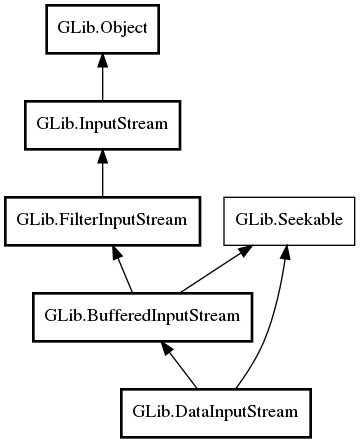

DataInputStream
Object Hierarchy:

Description:
public class DataInputStream :
BufferedInputStream,
Seekable
Namespace: GLib
Package: gio-2.0
Content:
Properties:
Creation methods:
Methods:
- public DataStreamByteOrder get_byte_order ()
- public DataStreamNewlineType get_newline_type ()
- public uint8 read_byte (Cancellable? cancellable = null) throws IOError
- public int16 read_int16 (Cancellable? cancellable = null) throws IOError
- public int32 read_int32 (Cancellable? cancellable = null) throws IOError
- public int64 read_int64 (Cancellable? cancellable = null) throws IOError
- public string? read_line (out size_t length = null, Cancellable? cancellable = null) throws IOError
- public async string? read_line_async (int io_priority = DEFAULT, Cancellable? cancellable = null, out size_t length = null) throws IOError, IOError
- public string? read_line_utf8 (out size_t length, Cancellable? cancellable = null) throws IOError
- public async string? read_line_utf8_async (int io_priority = DEFAULT, Cancellable? cancellable = null, out size_t length) throws IOError, IOError
- public uint16 read_uint16 (Cancellable? cancellable = null) throws IOError
- public uint32 read_uint32 (Cancellable? cancellable = null) throws IOError
- public uint64 read_uint64 (Cancellable? cancellable = null) throws IOError
- public string read_until (string stop_chars, out size_t length, Cancellable? cancellable = null) throws IOError
- public async string read_until_async (string stop_chars, int io_priority = DEFAULT, Cancellable? cancellable = null, out size_t length) throws IOError, IOError
- public string read_upto (string stop_chars, ssize_t stop_chars_len, out size_t length, Cancellable? cancellable = null) throws IOError
- public async string read_upto_async (string stop_chars, ssize_t stop_chars_len, int io_priority = DEFAULT, Cancellable? cancellable = null, out size_t length) throws IOError, IOError
- public void set_byte_order (DataStreamByteOrder order)
- public void set_newline_type (DataStreamNewlineType type)